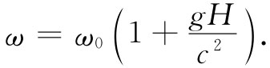

现在我们想利用等效原理来解决发生在引力场中的一件奇怪的事情。我们将向你说明在火箭飞船中发生的某些事情，这些事情你大概没有预料到会发生在引力场中。如果把一只钟放在火箭飞船的“前面”——即“前端”——把另一只完全相同的钟放在“尾部”，如图42-16所示。把这两只钟分别称为A和B。如果在飞船加速时比较这两只钟，则位于前面的钟比位于尾部的钟跑得快些。为搞清楚这一点，设想前面的钟每秒发一次闪光，而坐在船尾的你将到达的光信号与钟B的指针进行比较。比如说，当钟A发出闪光时火箭处在图42-17所示的位置a，而当闪光到达钟B处时，火箭处在位置b。后来，当钟A发出下一次闪光时，飞船将处在位置c，而当你看到闪光到达钟B处时，它处在位置d。
| 图42-16 携带两只钟的正在加速的火箭飞船 | 图42-17 位于加速火箭飞船前面的钟似乎比位于尾部的钟跑得快 |
第一次闪光传播的距离为L1 ，第二次闪光传播的距离较短为L2 。后者距离所以较短是因为飞船正在加速，因而在发出第二次闪光的时刻它已经具有了较大的速率。于是你可以明白，如果从钟A发出的两次闪光的间隔为1s，则它们到达钟B的间隔要比1s稍微短一点，因为第二次闪光在路上并不要耗费像第一次闪光那么多时间。对所有以后发出的闪光来说，也会发生同样的情况。所以要是你坐在船尾，就会得出结论：钟A比钟B跑得快。如果你打算反过来做同样的事情——使钟B发射光而在钟A处接收——则你会得出结论：B比A跑得慢 。一切都互相符合，一点也不神秘。
但现在我们来考察静止在地球重力场中的火箭飞船。同样的事情发生了 。如果你带着一只钟坐在地板上，并看着放在高处书架上的另一只钟，它将显得比地板上的一只跑得快！你说：“但这是错误的。时间应该是相同的。既然没有加速度，钟就没有理由显得步调不一致。”但是如果等效原理是对的，那两只钟就必然不会同步。爱因斯坦坚持认为该原理是 正确的，并且勇敢而正确地继续进行研究。他提出在引力场中不同地点的钟必然表现出以不同的快慢走动。但是，如果一只钟相对其他的钟始终显得 快慢不同，那么就第一只而论，其他钟正以不同的速率走动着。
然而我们现在看到，这里的钟与早先我们谈到过的热板上昆虫的热尺相类似。我们曾想象尺、昆虫及一切东西在不同温度处都以相同的方式改变其长度，所以昆虫们永远也不可能知道它们测量用的尺正随它们在热板上到处移动而改变。这种情况与引力场中的钟相同。放在较高水平面上的每只钟看上去走得比较快，心搏也跳得较快，所有的过程都进行得较快。
如果事情不是这样，则你就有可能知道引力场与加速参考系之间的差别。时间能够逐处变化的概念虽是一个困难的概念，但它是爱因斯坦曾使用过的概念，它是正确的——不管你信不信。
应用等效原理，可以计算出引力场中钟的快慢随高度改变了多少。我们只要算出加速的火箭飞船中两只钟之间的表现偏差即可。做这件事最容易的办法，就是应用我们在第1卷34章所得到的关于多普勒效应的结果。在那里我们得到——参见式（34.14）——如果v是源和接收机 之间的相对 速率，则接收 到的频率ω与发射 频率ω0 的关系为
现在，如果考虑图42-17中加速着的火箭飞船，则在任何一个瞬间发射机和接收机都以相等的速度运动。但是，在光信号从钟A传送到钟B所需的时间内，飞船已经加速了。实际上它已获得了额外的速度gt，这里g是加速度，t是光从A到B传播距离H所需的时间。这个时间非常接近于H/c，所以当光信号到达B时，飞船已增加了速度gH/c。接收机相对信号离开时刻的发射机 始终具有这个速度。所以这就是在多普勒公式（42.4）中应该使用的速度。设想船的长度和加速度足够小，因而这个速度比光速c小得多，就可把项v2 /c2 略去。从而得
 （42.5）
因而对宇宙飞船中的两只钟来说，得到如下关系：
式中H是发射机高出 接收机的高度。
根据等效原理，对于在自由落体加速度为g的引力场中高度相隔H的两只钟来说，相同的结果必然成立 。
这是一个十分重要的概念，我们希望它也能从另一个物理定律——能量守恒定律得出。我们知道，作用在一个物体上的引力与该物质的质量M成正比，而M与总内能E的关系为M=E/c2 。例如，由一个原子核嬗变成另一个原子核的核反应能量 所确定的原子核质量，与根据原子的重量 所得到的质量相符。
现在考虑一个原子，它具有总能量为E0 的最低能量状态和总能量为E1 的较高能量状态，它可以通过发光而从状态E1 跃迁到状态E0 。光的频率ω由下式给出
ћω=E1 -E0 . （42.7）
现在假定有这样一个原子，它位于地板上，处在E1 态，我们把它从地板上带到高度为H的地方。为此，在携带质量为m1 =E1 /c2 的原子上升的过程中，必定要克服引力做某些功，所做功的大小为
（42.8）
然后让原子发射一个光子而跃迁到较低的能量状态E0 。接着我们把原子带回到地板上，在返回的过程中原子的质量为E0 /c2 ，回来后得到的能量为
（42.9）
所以我们所做功的净值等于
（42.10）
原子发射光子时失去了能量E1 -E0 。假定光子恰巧向下运动到达地板，并被原子吸收。试问在这里光子递交给原子多少能量？一开始你或许会想到它正好释放出能量E1 -E0 ，但是，根据下面的论证可以明白，要是能量守恒的话，那你们的想法就不可能是正确的。开始时我们位于地板处带有的能量为E1 ，结束时我们位于地板平面上，能量为处于最低能量状态的原子能量E0 加上从光子接收到的能量EPH 。在此期间，我们不得不提供了式（42.10）的附加能量ΔU。如果能量守恒，则最后我们在地板处所具有的能量必定大于出发时具有的能量，其差正好是我们所做的功。换句话说，必然有
EPH +E0 =E1 +ΔU （42.11）
或
EPH =（E1 -E0 ）+ΔU.
情况必然是：光子到达地板时并不只带有它出发时的能量E1 -E0 ，而是具有稍许多一点的能量 ，否则有些能量就损失掉了。若将式（42.10）中所得的ΔU代入式（42.11），就得到光子到达地板时的能量为
然而，能量为EPH 的光子具有频率ω=EPH /ћ。将发射光子的频率称为ω0 ——根据式（42.7）它等于（E1 -E0 ）/ћ——式（42.12）中的结果又一次给出了光子在地板上被吸收时的频率与它被发射时的频率间的关系式（42.5）。
相同的结果还可以用别的办法得到。频率为ω0 的光子具有能量E0 =ћω0 。既然能量E0 含有引力质量E0 /c2 ，所以光子具有质量（不是静质量）ћω/c2 ，因而它受到地球的“吸引”。在下落距离H的过程中，它将增加附加能量（ћω0 /c2 ）gH，所以它到达地板时带有能量
但它在下落后的频率为E/ћ，这样再次给出式（42.5）中的结果。只有当爱因斯坦关于引力场中钟的预言正确时，我们关于相对论、量子物理及能量守恒的概念才全部配合得起来。上面所谈到的频率的改变一般也是非常小的。例如，对于地球表面20m的高度差来说，频率差仅约为2/1015 。然而，正是这个改变量，最近已经在实验上利用穆斯堡尔效应被发现了 [6] 。爱因斯坦是完全正确的。